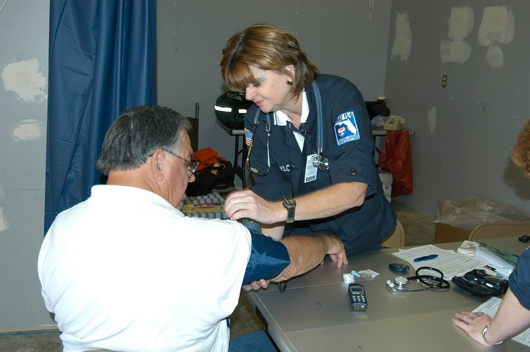

Giving Up Driving and Cognitive Decline: Is There a Link?
Older adults who stop driving often show faster cognitive decline afterward. Here's what the research actually explains about that link, and what doesn't.

Key takeaways
- People who stop driving tend to decline faster afterward in long-running studies of older adults.
- This is an association, not proof that stopping driving causes decline. Declining health often drives both.
- Losing mobility often shrinks a person's world — fewer errands, less social contact, more time alone at home.
- Planning transportation ahead of time appears to soften the effect more than the decision to stop driving itself.
- There's no single test or age that determines when someone should stop driving.
Giving up the car keys is one of the harder transitions in aging, and research keeps finding that people who stop driving often show faster cognitive and functional decline in the years that follow. That finding gets repeated a lot, usually without the context it needs. Here's what the studies behind it actually show, and why the honest reading is more about what driving represents than about steering a car.
What does the research actually find about driving cessation?
Long-running studies that follow older adults over time have repeatedly found that those who stop driving show steeper drops in cognitive test scores, physical function and reported quality of life compared with those who keep driving. The pattern holds up across different countries and study designs, which is part of why it gets so much attention.
What these studies can't do is prove that giving up driving causes the decline. People stop driving for reasons: failing eyesight, slower reaction time, a near-miss, a family's concern, or the early effects of a cognitive condition. Many of those same reasons independently predict faster decline. Teasing apart "stopping driving made things worse" from "the same underlying decline caused both the stopping and the worsening" is genuinely difficult, and most of the research design can't fully separate them.
So why might stopping driving still matter on its own?
Even after accounting for underlying health, several studies find that the drop in social contact, errands and independent outings that often follows driving cessation is itself linked to worse cognitive and emotional outcomes. Losing a driver's license frequently means losing a big chunk of unplanned, everyday activity: the coffee with a friend, the trip to church or a club meeting, the spontaneous errand. Those small, frequent interactions add up, and their sudden disappearance is a plausible, independent contributor to decline, separate from whatever health issue prompted the decision in the first place.
This distinction matters for anyone facing the decision. The problem isn't the steering wheel. It's what driving quietly provides: autonomy, routine and a low-effort way to stay connected to the world. Replace those things, and some of the risk likely goes with it.
COMPLEX
The memory formula we rate highest in 2026
One formula combined a fully transparent, clinically-dosed label: citicoline, bacopa, phosphatidylserine and B-vitamins, with a 60-day guarantee.
See Today's Price →How do doctors decide when someone should stop driving?
There's no single cutoff age or test result that settles it. Clinicians generally look at vision, reaction time, any recent near-misses or citations, and performance on standard cognitive screening tools, then weigh those against how someone actually functions day to day. When there's real uncertainty, a formal on-road driving evaluation, run by an occupational therapist or a specialized program, gives a more objective answer than family opinion or a single office visit can.
Waiting for a crisis, a crash or a serious scare, tends to produce a harder, more sudden transition than planning ahead does. Families who raise the subject early, while a person can still take part in the decision, generally report an easier adjustment than those who face it only after an incident forces the issue.
What helps protect cognitive health after someone stops driving?
The research points fairly clearly at replacing what driving provided, not just removing the car. Lining up reliable transportation before the keys are given up, rather than scrambling afterward, helps keep errands, appointments and social visits from simply stopping. Ride-share services, community senior transportation, volunteer driver programs and family schedules can all fill part of the gap. Keeping up existing social ties and finding a few walkable or home-deliverable routines also softens the isolation that seems to carry much of the risk.
None of this guarantees a slower decline. It does address the mechanism the evidence actually points to: reduced engagement and connection, not the mechanical act of driving itself.
What's the honest bottom line here?
Stopping driving is a real marker of risk, worth taking seriously, but it's a marker more than a cause. The decline that follows is better explained by what's lost along with it than by the act of giving up a license. If you or a family member is approaching this transition, the most useful move isn't trying to drive longer than is safe. It's building the replacement routine, transportation, social contact, errands, before the driving stops, not after. For more on staying connected as independence changes with age, see our guide to social connection and brain health.
Frequently asked questions
Does giving up driving cause cognitive decline?
Studies consistently find that people who stop driving tend to decline faster afterward, but this is an association, not proof of cause. Much of it likely reflects declining health and ability leading to both the decision to stop driving and the faster decline, not the stopping itself.
Why would stopping driving be linked to faster decline at all?
Losing the ability to drive often shrinks someone's world quickly, with less social contact, fewer errands and outings, and more time at home. Those changes are themselves linked to cognitive decline, independent of whatever first led a person to stop driving.
How do doctors usually decide when someone should stop driving?
There's no single age or test. Doctors and families typically weigh vision, reaction time, recent near-misses or citations, and performance on cognitive screening, often alongside a formal on-road driving evaluation when there's genuine doubt.
What can someone do to stay engaged after they stop driving?
Lining up reliable transportation before driving stops, not after, matters most. Rideshares, community senior transport, family schedules and walkable errands all help preserve the social contact and outings that seem to matter for cognitive health.
Is it safe to keep driving with mild memory problems?
It depends entirely on the individual, not the diagnosis alone. Many people with mild cognitive impairment drive safely for years. A doctor or a formal driving evaluation is the right way to assess this, not guesswork at home.
Protect independence from more than one angle
Staying socially and physically engaged matters, and so does giving your brain the nutrients it needs. See the memory formulas our editors rate highest for 2026.
See the Top 5 Memory Formulas →Related: Does retirement affect memory · Cognitive reserve explained · How to improve your memory · Best memory formulas of 2026